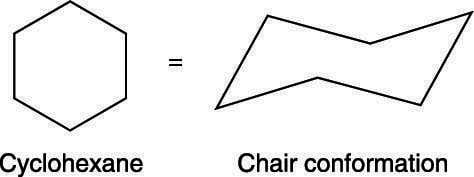
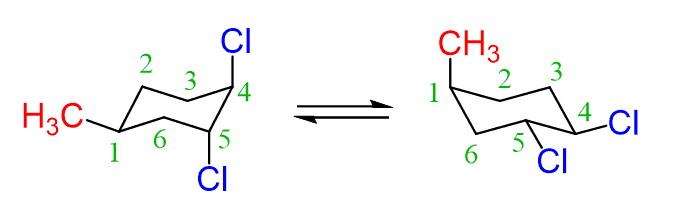
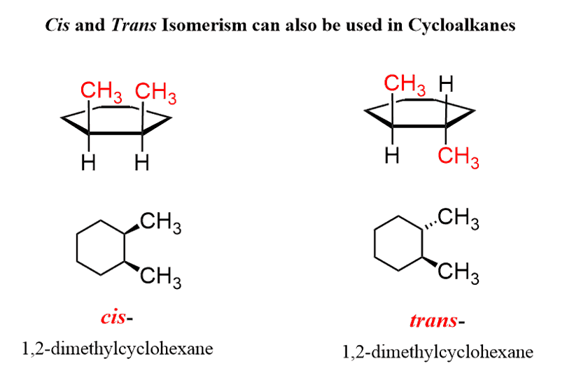
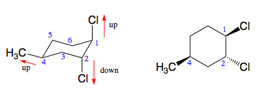
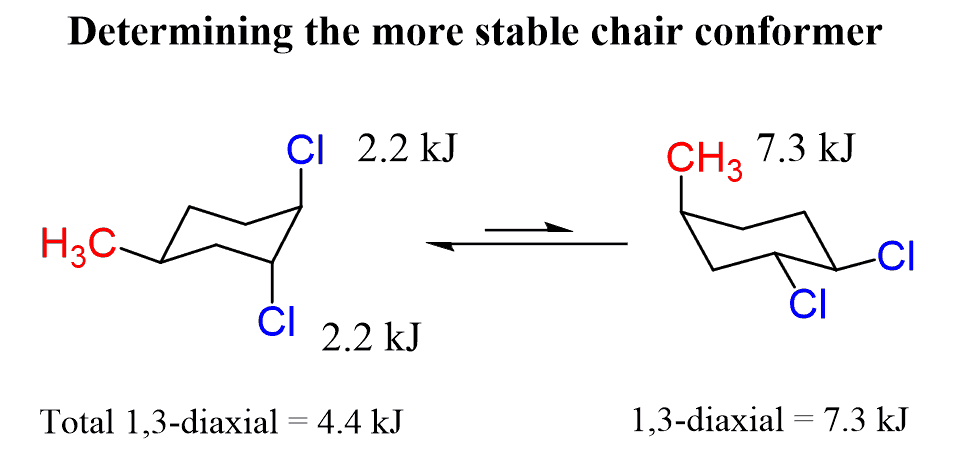

Alkanes
Alkaes have only carbons, hydrogens, and single bonds in the molecule.
The carbons in Alkanes are characterized by the number of other carbons attached:
- Primary carbon - carbon attached to 1 other carbon
- Secondary carbon - carbon attached to 2 other carbon
- Tertiary carbon - carbon attached to 3 other carbon
- Quaternary carbon - carbon attached to 4 other carbon
Cycloalkanes
Cycloalkanes are alkanes that contain a ring
Small cycloalkane rings (3-5 carbons) exhibit ring strain which destabilize the molecule.
- Ring strain is deviations from ideal bond angles
- Ring strain can also causes eclipsing interactions
Cyclohexanes and Chair Conformation
Cyclohexanes exhibit no ring strain because it statisfy the ideal bond angle.
Chair conformations represent the actual geometry of cyclohexanes.
In chair conformations:
- Groups can either be Axial/Equatorial and point Up/Down
- If the group connect to the carbon 1 that points up is axial, then the group connected to carbon 2 and carbon 6 that point up will be equatorial.
Rotation along C-C bond will result in a chair flip. In a chair flip, groups that were axial will become equatorial.
Substituted Cyclohexanes
In cyclohexanes, non-H group are called substituents
The relative positioning between substituents can be described as cis or trans.
The flat ring representation give "up/down" info but not axial/equatorial info
Substituents represented by wedges are up and substituents represented by dashes are down.
Substituents on equatorial position are more stable. If multiple substituents are present, boliker group prefer to be on the equatorial position.
An A-value is the cost for a group to be axial:
- Equatorial → Axial: cost energy; positive (+) A-value
- Axial → Equatorial: release energy; negative (-) A-value